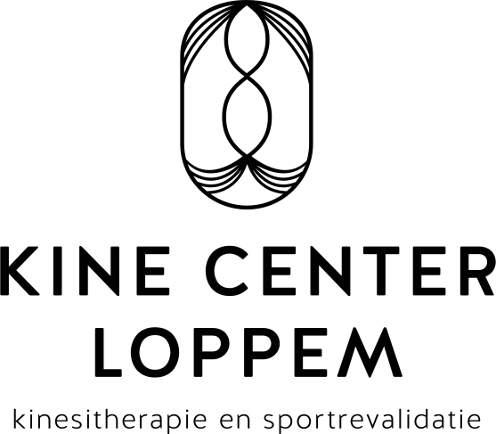

contact
Stationsstraat 7A
8210 Loppem
over kine center loppem
Vanuit 4 jaar ervaring die ik heb opgedaan bij Move To Cure - Lieven Maesschalck, wil ik me verder toespitsen op musculoskeletale problemen. Door de combinatie van manuele behandeling met aangepaste oefeningen in onze ruime, goed uitgeruste oefenzaal streven we naar dé optimale oplossing voor uw probleem.
diensten
U kan bij ons terecht voor:
- Algemene kinesitherapie
- Sportrevalidatie
- Revalidatie na orthopedische ingrepen
- Personal coaching
Opening is voorzien op 3 oktober 2016, afspraken kunnen reeds gemaakt worden. Komt u graag vrijblijvend eens een kijkje nemen? U bent welkom in de week van 3 tot 7 oktober tijdens de opendeur.